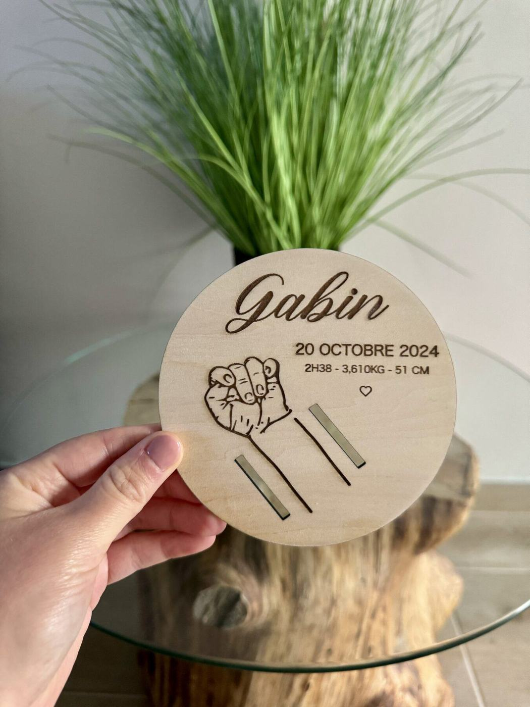
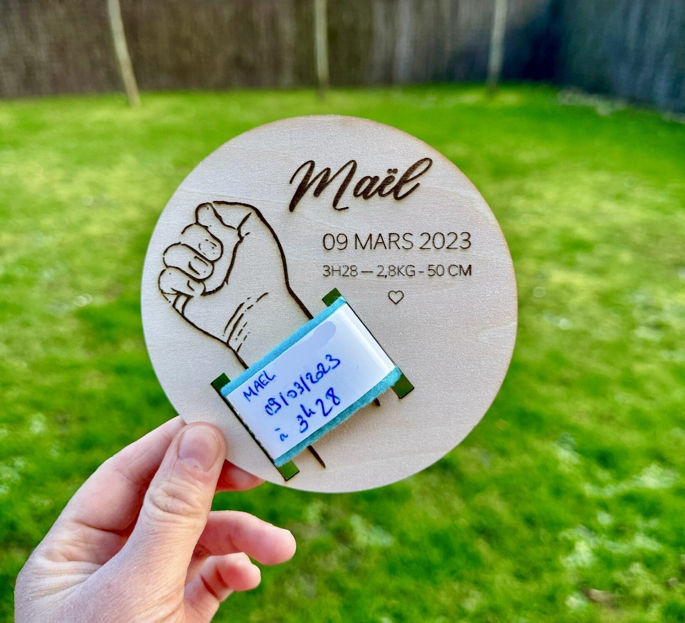
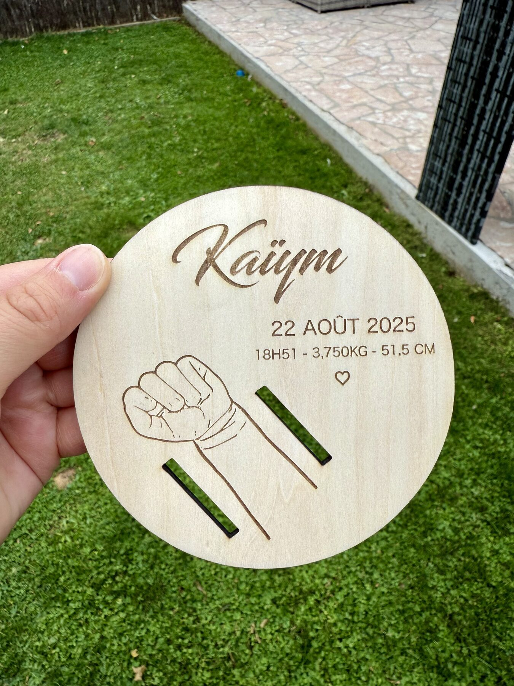

À partir d'une simple photo du poignet de bébé, je reproduis fidèlement le dessin de sa petite main pour créer un support gravé qui accueillera son véritable bracelet de naissance.
Ce bracelet remis à la maternité, on le garde précieusement — mais on ne sait jamais vraiment quoi en faire. Ce support en bois lui offre enfin la place qu'il mérite, en reproduisant fidèlement la main qui le portait.

Gabin — la main gravée fidèlement à partir d'une photo du poignet

Chaque support est créé à partir du véritable bracelet de naissance de votre enfant. Il vous suffit de m'envoyer une simple photo du poignet de bébé portant son bracelet, et je reproduis fidèlement le dessin de sa main pour en faire un souvenir gravé, unique.
En plus de la gravure de la main, j'ajoute le prénom de l'enfant ainsi que ses informations de naissance : date, heure, poids et taille.
Une fois le support reçu, il ne reste plus qu'à glisser le vrai bracelet dans les fentes prévues — il retrouve alors toute sa place, mis en valeur plutôt qu'oublié dans un tiroir.
Les modèles présentés ici ne sont que des exemples : chaque support est conçu spécialement pour chaque enfant, aucune création n'est reproduite à l'identique.

Kaÿm — vue d'ensemble, prête à accueillir le braceletSupport bracelet de naissance personnalisé
Le principe est simple : vous m'envoyez une photo du poignet de bébé portant son bracelet de naissance, et je reproduis fidèlement le dessin de sa main pour créer un support personnalisé avec son prénom et ses informations de naissance.
Les modèles présentés sur cette page sont uniquement des exemples de réalisations déjà envoyées à mes clients. Chaque support est conçu spécialement pour chaque enfant — aucune création n'est reproduite à l'identique, chaque pièce est unique.
Il ne s'agit pas simplement d'un support pour bracelet, mais d'un souvenir des tout premiers instants de vie, façonné à la main, spécialement pour votre famille.
Reproduction fidèle à partir d'une simple photo
Fabrication artisanale dans mon atelier
Création unique réalisée sur commande
Le vrai bracelet de naissance, enfin mis en valeur
Une toute petite main, gravée pour toujours — pour ne jamais oublier la taille qu'elle avait le premier jour.
Envoyez-moi une photo du poignet de bébé avec son bracelet — je m'occupe du reste.